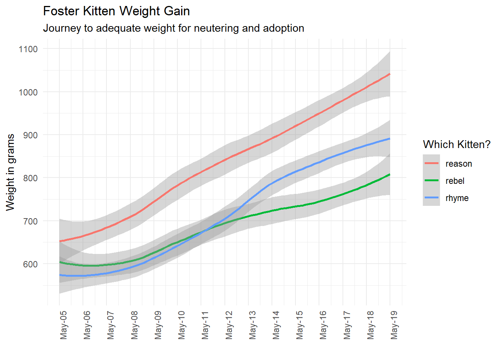

Fostering kittens

In May 2017 we fostered three kittens who were siblings. I tracked their daily weights out of curiosity and because I while I really enjoy fostering kittens, I would like some good rule of thumb for expected weight gain to help plan life around fostering (eg: Is this likely a 2 week or more of 4 week fostering gig?) The Maui Humane Society had specific weight cut offs for when kittens could be neutered (910 grams or 2 lbs), so for kittens that are socialized and healthy, this weight goal is the last hurdle before their neutering and being put up for adoption. Sadly, I don’t know how old the kittens were when we started fostering them, but I was able to find the foster request email from the shelter, and the director estimated the duration of fostering would be 4-5 weeks. Pretty amazing then that it only took 2 weeks, but maybe she just didn’t have the data to make good predictions on how long it takes kittens to gain weight.
Import and tidy data
The only libraries I have loaded are tidyverse and janitor. I tried to figure out if their was a code chuck option to show the code, but not show the evaluation of it, but didn’t find it. I’ll need to search through R Markdown. Update found it. Looks like I need to set results to false
library(tidyverse)
## ── Attaching packages ────── tidyverse 1.2.1 ──
## ✔ ggplot2 3.2.1 ✔ purrr 0.3.2
## ✔ tibble 2.1.3 ✔ dplyr 0.8.3
## ✔ tidyr 1.0.0 ✔ stringr 1.4.0
## ✔ readr 1.3.1 ✔ forcats 0.4.0
## ── Conflicts ───────── tidyverse_conflicts() ──
## ✖ dplyr::filter() masks stats::filter()
## ✖ dplyr::lag() masks stats::lag()
library(janitor)
##
## Attaching package: 'janitor'
## The following objects are masked from 'package:stats':
##
## chisq.test, fisher.test
kitten_weight_gain <- read_csv("/cloud/project/content/post/kitten_weight_gain - Sheet1.csv")
## Parsed with column specification:
## cols(
## Date = col_character(),
## `Day of Fostering` = col_double(),
## Rhyme_male = col_double(),
## Reason_male = col_double(),
## Rebel_female = col_double(),
## Scale = col_double()
## )
names(kitten_weight_gain)
## [1] "Date" "Day of Fostering" "Rhyme_male"
## [4] "Reason_male" "Rebel_female" "Scale"
kitten_weight_gain <- clean_names(kitten_weight_gain)
tidy_kittens <- pivot_longer(kitten_weight_gain, cols = 3:5, names_to = "kitten_name", values_to = "weight_in_grams")
tidy_kittens <- tidy_kittens %>% separate(col = 4, into = c("kitten_name", "sex"), sep = "_")
tidy_kittens$sex <- as.factor(tidy_kittens$sex)
tidy_kittens$scale <- as.factor(tidy_kittens$scale)
tidy_kittens$date <- as.Date(tidy_kittens$date, format = "%m/%d/%Y")
tidy_kittens$weight_in_grams <- as.numeric(tidy_kittens$weight_in_grams)
head(tidy_kittens)
## # A tibble: 6 x 6
## date day_of_fostering scale kitten_name sex weight_in_grams
## <date> <dbl> <fct> <chr> <fct> <dbl>
## 1 2017-05-05 1 1 rhyme male 590
## 2 2017-05-05 1 1 reason male 680
## 3 2017-05-05 1 1 rebel female 635
## 4 2017-05-06 2 2 rhyme male 555
## 5 2017-05-06 2 2 reason male 625
## 6 2017-05-06 2 2 rebel female 550
Ok now I have my data in a more tidy format. This is the first time I have used dpylr::pivot_longer. I first tried to use dpylr::spread but saw a little note that pivot_longer was the new kid in town. I thought it was great. Certainly was faster for me to use even though it was the first time reading through the documentation.
Weight gain, graphically
I want to denote a few things in my graph: distinguish the two males from the female kitten, note that the first day’s wieght was by a different scale. And I’d love to somehow squeeze a picture of the kitten into its key–but since I only have a few minutes before my toddler wakes up–basics first.
graphic_kittens <- ggplot(tidy_kittens, aes(x = date, y = weight_in_grams, color = kitten_name, shape = sex)) +
geom_smooth() +
labs(title = "Foster Kitten Weight Gain", subtitle = "Journey to adequate weight for neutering and adoption") +
xlab(" ") +
ylab("Weight in grams") +
theme_minimal() +
scale_x_date(date_breaks = "1 day", date_labels = "%b-%d")+
theme(axis.text.x = element_text(angle = 90, hjust = 1)) +
labs(color = "Which Kitten?")
print(graphic_kittens)
## `geom_smooth()` using method = 'loess' and formula 'y ~ x'

Next steps
Questions I have now after the first collection of data: Do males and females have different weight gain rates? Do any animal shelters moniter weight gain as an indicator of kitten well being like we have for infant/child growth curves as humans? What are the currently known determinants of weight gain in domestic kittens? Though these kittens were supposedly siblings, queens can have a single litter with multiple toms fathering kittens, so the kittens from a single litter might be more or less related.